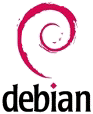

Distribuciones
Si Linux es solo un kernel, ¿que necesitamos para usarlo en nuestro ordenador? Recopilar el resto de programas, instalar el conjunto en nuestro equipo, y configurarlo para que todo vaya bien. O bien conseguir una recopilación realizada y distribuida por algún colectivo o empresa. GNU es un ejemplo de sistema operativo completo, pero hay otros basados en el kernel linux que se distribuyen como software libre. Para conseguir cualquiera de estas “distribuciones” (familiarmente conocidas como “distros” en la jerga informática) basta con acudir a su página web, descargarla, e instalarla en nuestro ordenador.
Una de las peculiaridades del software libre es que podemos utilizarlo a nuestro gusto, hacer copias, modificarlo o redistribuirlo. Podemos tomar una distribución, introducir algunos cambios, añadir algún programa de nuestro gusto, y de esta forma crear una nueva “distro” bautizada con nuestro nombre, si ese es nuestro deseo. De esta forma veremos que hay distribuciones que están basadas en otras. ¿Cuantas “distros” hay? Considerando solo las de cierta relevancia, cientos. Podemos ver un ranking de popularidad en http://distrowatch.com/.
Veamos algunas de las más populares.
Slackware
 Es la distribución más antigua de las que existen en activo. Fue creada en 1993 a raiz de un proyecto fracasado llamado SLS Linux y su filosofía es lograr una réplica de UNIX, sin grandes alardes, sacrificando la vistosidad en beneficio de lograr un sistema estable y sólido. Es una distro muy popular entre administradores de servidores y grandes sistemas.
Es la distribución más antigua de las que existen en activo. Fue creada en 1993 a raiz de un proyecto fracasado llamado SLS Linux y su filosofía es lograr una réplica de UNIX, sin grandes alardes, sacrificando la vistosidad en beneficio de lograr un sistema estable y sólido. Es una distro muy popular entre administradores de servidores y grandes sistemas.
- Página web: http://www.slackware.com
Red Hat
También es una de las pioneras, siendo históricamente la distribución comercial por excelencia orientada al mundo de la empresa.
- Página web de Red Hat: https://www.redhat.com/
 De Red Hat se derivan otras muchas, e incluso hay una que patrocinan ellos mismos con el nombre de Fedora, que se mantiene como esfuerzo comunitario y sirve de campo de ensayo para las novedades que posteriormente se trasladarán a RedHat.
De Red Hat se derivan otras muchas, e incluso hay una que patrocinan ellos mismos con el nombre de Fedora, que se mantiene como esfuerzo comunitario y sirve de campo de ensayo para las novedades que posteriormente se trasladarán a RedHat.
- Página web de Fedora: https://getfedora.org/es/
 Entre el resto de distros derivadas, una de las más populares es CentOS, cuyo objetivo es librarse de toda referencia comercial.
Entre el resto de distros derivadas, una de las más populares es CentOS, cuyo objetivo es librarse de toda referencia comercial.
- Página web de CentOS: https://www.centos.org
SuSE
 De origen alemán, comenzó siendo una versión de slackware cuyo propósito era superar esa barrera de austeridad autoimpuesta y convertirse en una recopilación de software lo más completa posible. Actualmente es propiedad de la empresa Novell y se distribuye como parte de su gama de productos. Al igual que sucede con Fedora, SuSE patrocina una versión comunitaria llamada openSUSE.
De origen alemán, comenzó siendo una versión de slackware cuyo propósito era superar esa barrera de austeridad autoimpuesta y convertirse en una recopilación de software lo más completa posible. Actualmente es propiedad de la empresa Novell y se distribuye como parte de su gama de productos. Al igual que sucede con Fedora, SuSE patrocina una versión comunitaria llamada openSUSE.
- Página web de openSUSE: https://es.opensuse.org/
Debian
 Ante la proliferación de versiones comerciales, en 1993 se puso en marcha un proyecto para lograr un sistema operativo completamente ajeno a intereses de empresas, excluyendo todo software con licencias de uso restrictivas. Debian está considerada la distribución libre por excelencia y otras muchas distros están basadas en ella.
- Página web: https://www.debian.org/
Arch
 Las primeras distribuciones eran simples recopilaciones de software destinadas a un usuario con los suficientes conocimientos técnicos como para instalar y configurar su equipo. Con el paso de los años, la mayoría de las “distros” han evolucionado convirtiéndose en paquetes con una calidad similar a los sistemas comerciales, incorporando toda clase de mecanismos automatizados para gestionar nuestro equipo e instalar nuevo software.
Las primeras distribuciones eran simples recopilaciones de software destinadas a un usuario con los suficientes conocimientos técnicos como para instalar y configurar su equipo. Con el paso de los años, la mayoría de las “distros” han evolucionado convirtiéndose en paquetes con una calidad similar a los sistemas comerciales, incorporando toda clase de mecanismos automatizados para gestionar nuestro equipo e instalar nuevo software.
Arch fue creada en 2002 como respuesta a la creciente complejidad de las distribuciones, y su filosofía es presentar un entorno sencillo y orientado a usuarios avanzados que les guste configurar el sistema a mano. Ideal para aprender “las tripas” de Linux.
- Página web: https://www.archlinux.org
Ubuntu
 Es posiblemente la distribución Linux más popular. Fue creada en 2004 por una empresa llamada Canonical, con sede en la Isla de Man y patrocinada por el multimillonario sudafricano Mark Shuttleworth. Su propósito es conseguir que todo el mundo tenga acceso a las tecnologías de la información, convirtiendo Linux en un producto con la calidad de otros sistemas operativos comerciales, fácil de usar, y extendido a otros tipos de dispositivos, televisores, teléfonos móviles, etc.
Es posiblemente la distribución Linux más popular. Fue creada en 2004 por una empresa llamada Canonical, con sede en la Isla de Man y patrocinada por el multimillonario sudafricano Mark Shuttleworth. Su propósito es conseguir que todo el mundo tenga acceso a las tecnologías de la información, convirtiendo Linux en un producto con la calidad de otros sistemas operativos comerciales, fácil de usar, y extendido a otros tipos de dispositivos, televisores, teléfonos móviles, etc.
Es una distribución basada inicialmente en Debian, aunque muy “tuneada”. Su página web es https://www.ubuntu.com
Mint
 De las muchas distribuciones basadas en Ubuntu, posiblemente Mint sea una de las más populares, por su facilidad de uso y por llevar de serie complementos que en otras distribuciones solo se incluyen opcionalmente por tener licencia propietaria.
De las muchas distribuciones basadas en Ubuntu, posiblemente Mint sea una de las más populares, por su facilidad de uso y por llevar de serie complementos que en otras distribuciones solo se incluyen opcionalmente por tener licencia propietaria.
- Página web: https://linuxmint.com
Escogiendo una distribución
En líneas generales, el principal factor a tener en cuenta es la experiencia de usuario, ya que las aplicaciones que instalemos, tales como procesador de textos, visor de fotografía y videos, navegador de internet o gestor de correo suelen ser comunes a todas las distros.
Por otra parte, si dividimos nuestro disco duro en dos particiones, una para documentos y otra para el sistema operativo y los programas, resulta fácil borrar esta segunda partición e instalar una “distro” diferente, sin que eso afecte a nuestro trabajo diario (aunque conviene tomar la precaución de hacer previamente alguna copia de seguridad de los documentos, claro está).
Hay distribuciones más amigables y fáciles de configurar, mientras que otras están orientadas a usuarios técnicos. Algunas son comerciales y otras excluyen todo rastro de programas con licencia propietaria e imagen de marca. Unas son más austeras y otras más vistosas, aunque más consumidoras de recursos, como contrapartida.
Aquí podemos ver un análisis comparativo. Mirándolo con detenimiento, veremos algunas cosas que las diferencian.
Para empezar, cada distribución tiene su propio programa gráfico para automatizar el proceso de instalación, aunque algunas, como es el caso de Arch o Slackware, se basan en un entorno más austero y técnico. Entre las que cuentan con instalador gráfico tenemos:
- Redhat, Fedora y derivados disponen de un programa instalador llamado Anaconda.
- Debian tiene su propio programa Debian Installer.
- Ubuntu y derivados como Mint tienen un instalador llamado Ubiquity.
- SuSE y derivados utilizan el programa YaST.
Otra cosa que diferencia a las distribuciones es su repositorio de software. Si queremos añadir nuevos programas, basta con acudir a un repositorio remoto con miles de paquetes de software y pulsar sobre un botón instalar. Los repositorios de Ubuntu, Debian y OpenSuse están entre los más grandes. De todas formas, también podemos instalar software descargándolo directamente de su página web, con lo que además obtendremos la versión más reciente. Los repositorios oficiales de las distribuciones no siempre tienen la versión más actualizada de cada cosa.
Además, cada repositorio sirve los programas en un formato diferente. Algunos vienen empaquetados en un simple archivo .zip que podemos descargar y desempaquetar en nuestro disco duro, aunque hay otros formatos muy populares, como es el caso del formato .deb, usado por Debian, Ubuntu y Mint, por ejemplo, o el formato .rpm (redhat package manager), usado por RedHat y derivados.
Para hacer uso de los repositorios, cada distribución tiene su programa instalador de software. Este programa descarga los ficheros y resuelve las dependencias automáticamente, instalando también el software complementario que sea necesario. Uno de los instaladores más populares es el programa APT, usado por Debian, Ubuntu y derivados.
Como podemos ver, las diferencias entre una distro y otra se basan sobre todo en los mecanismos de instalación y configuración, además del volumen de sus repositorios. Otra diferencia notable entre ellas suele ser el programa de escritorio utilizado. Torvalds solo creó un kernel, que tenemos que complementar con otras utilidades, entre ellas, el escritorio. Cada distribución incluye el suyo favorito, y no hay un ganador claro. De todas formas, muchas distros nos dan la opción de escoger entre otros escritorios alternativos.